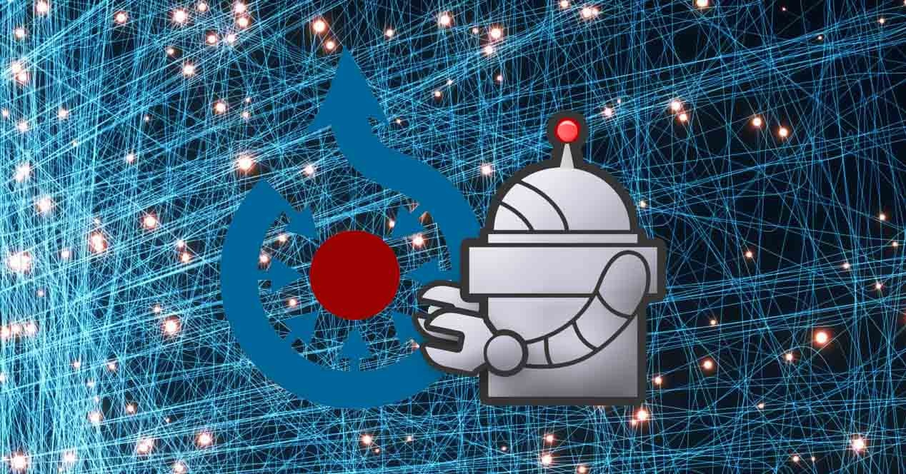

Los bots son programas informáticos que ejecutan tareas automatizadas en internet. Pueden realizar desde tareas simples, como buscar información, hasta operaciones más complejas, como interactuar con usuarios o analizar entidades de datos en poco tiempo.
Estos bots pueden clasificarse en buenos y maliciosos. Los bots buenos suelen ser utilizados por motores de búsqueda, redes sociales y platafprmas digitales para optimizar sus servicios, mientras que los bots malicionsos pueden ser usados para ataques informáticos, spam y otras actividades no deseadas.
| Cabecera | |
|---|---|
| Bots buenos | |
|  | |
| Bots maliciosos | Botnet,Spam Bots, Scrapers |
| Pie de tabla | |
Es importante distinguir entre estos dos tipos y tomar medidas de seguridad adecuadas para proteger nuestros sistemas y redes de bots maliciosos.
Link a ejemplo.com